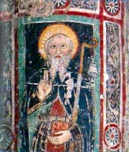
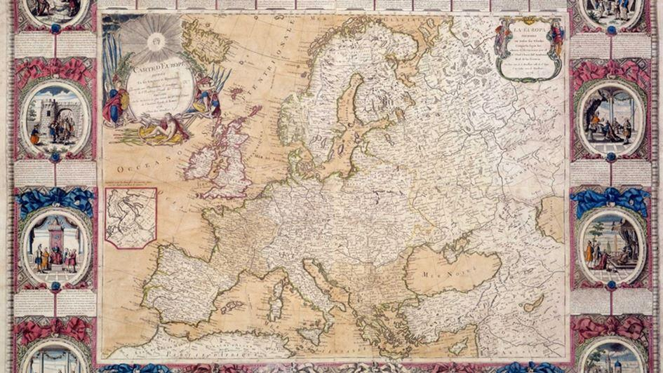
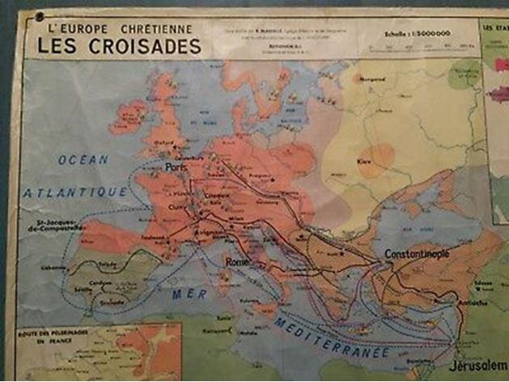

La question, éminemment inactuelle, des racines chrétiennes de l’Europe, s’invite pourtant souvent dans l’actualité, du Président Jacques Chirac se battant pour qu’il n’en soit pas fait mention dans le Préambule de la Constitution européenne, au commissaire français Pierre Moscovici disant qu’il n’y croyait pas. Or une telle question ne devrait pas faire débat. Car sinon qu’est-ce que l’Europe ? Une donnée géographique ? Alors la Turquie en fait partie. L’ethnie, ou la langue, « indo-européenne » ? Elle comprend aussi les iraniens, les indiens, les kurdes, les arméniens… Une institution ? La Norvège a refusé d’y entrer, la Grande-Bretagne vient d’en sortir, d’autres la suivront peut-être… Alors peut-on donner raison à M. Erdogan de l’avoir qualifiée de « club chrétien » ?
Oui, car l’Europe s’enracine évidemment dans le christianisme. Elle est en effet issue de la pars occidentalis de l’Empire romain, qui était officiellement chrétien lors du partage de 395. C’est dans cette moitié d’Empire, englobant l’Afrique du Nord, que vécut saint Augustin dont La Cité de Dieu a fondé un élément essentiel pour l’avenir de l’Europe : la distinction entre la « Cité des Hommes », dont la construction est la mission de l’État, et celle de Dieu, qui relève de l’Église, même si les deux doivent coopérer. Cette distinction était nouvelle, tant la tradition romaine était celle d’une confusion entre pouvoir politique et autorité religieuse. Une juste conception de la Laïcité est dès lors un élément essentiel de l’ADN européen. Voyons maintenant quelques jalons sur la route de l’identité chrétienne de l’Europe.
Le moine irlandais (saint) Colomban tout d’abord, fonde à la fin du VIe siècle une série de monastères dans les actuelles France, Suisse, Allemagne et Italie, maillons de réseaux économiques et intellectuels, et bases d’une culture commune. Il est le premier à avoir utilisé le terme « Europe » pour désigner notre région (pour les Grecs, l’Europe c’était grosso modo la Thrace), dans une lettre à Grégoire le Grand (590), et une autre à Boniface IV (614) : l’Europe était, pour lui, l’espace soumis à l’autorité du pape.
L’Empire carolingien ensuite, est la véritable matrice politique et géographique de l’Europe. Des chroniqueurs désignent en effet Charles Martel comme chef des « gens d'Europe », son petit-fils Charlemagne comme « phare de l'Europe », Louis le Pieux le « prince de l'Europe », tandis que le pape Jean VIII (872-882) est qualifié de « recteur de l'Europe ».
Citons enfin la règle de saint Benoît, imposée par Louis le Pieux, par souci d’unité spirituelle et culturelle, à tous les monastères de l’Empire (817), et la fondation, avec l’aide de l’Espagne et de l’Angleterre, de l’abbaye de Cluny (909), dont la carte des fondations qu’elle fera à son tour dessinera celle de l’Europe. L’éminent juriste Yves Guyon a défini les Bénédictins comme « la clef de voûte » de l’Europe.
Cet enracinement a bien sûr souvent été vécu de manière conflictuelle, la distinction entre le Trône et l’Autel n’étant jamais allée de soi. La Papauté a régulièrement eu tendance à comprendre son rôle comme supérieur à celui des souverains qui, tirant de Dieu, donc d’elle, leur autorité, lui devraient aussi leur pouvoir, et qu’elle aurait le droit de déposer (ce qu’on a appelé, à tort, « l’augustinisme politique »). Ceux-ci ont pour leur part souvent cédé à la tentation d’intervenir dans les affaires de l’Église, en nommant évêques et abbés, jusqu’à prétendre au droit de désigner le pape, ou d’en faire leur « chapelain privé », tel Charlemagne avec Léon III. L’histoire de l’Europe est rythmée par ces conflits : Querelle des investitures (XIe s.), lutte du Sacerdoce et de l’Empire (XIIe s.), théorie des « Deux Glaives », « guelfes » contre « gibelins », sac de Rome par les armées de Charles-Quint (1527)… Jusqu’à la séquestration par Napoléon de Pie VI et Pie VII. Le sacre de 1804, immortalisé par David, n’est ainsi que l’écho de celui - mille ans plus tôt - de Charlemagne, qui tenta déjà de se couronner lui-même… Les schismes ont toujours eu, au-delà des prétextes théologiques, un arrière-plan politique, l’affirmation d’une identité nationale, comme en Angleterre. En France, celle de la monarchie absolue est allée de pair avec celle des libertés gallicanes.
Malgré cette rivalité, le christianisme a favorisé une culture commune. La carte des monastères correspond à celle des droits de l’Homme, issus du message évangélique, et de la démocratie, restée vivace dans l’Église. On a aussi pu montrer que la notion de progrès, qui a fondé l’essor de la civilisation occidentale, était liée à la conception chrétienne d’un temps vectoriel allant d’un « moins bien » vers un « mieux », au moins espéré. Et puis, il faut le dire, ce creuset chrétien de liberté s’est constitué en face d’un Autre menaçant, porteur de toutes autres valeurs : l’islam, religion de la soumission.
Quand bien même certains nient que l’Europe puisse avoir une quelconque identité, a fortiori chrétienne, et même si, en désacralisant le Monde, le christianisme a entraîné une « sortie de la religion » (Marcel Gauchet), l’Europe reste anthropologiquement chrétienne. On ne saurait en effet réduire une religion à la foi, ou même à la pratique, ou aux joies du communautarisme : chacune a façonné une manière de penser que partagent même les plus incroyants. Il est à ce titre frappant de constater combien ceux qui se déclarent « athées » sont parfois, dans leur vie et leurs engagements, un vivant témoignage de l’Évangile !
Mais au cœur de cette unité culturelle, le dia-bolos, le diviseur, est encore intervenu. Sur les ruines de l’idée impériale se sont affirmées des nations. L’Angleterre et la France ont tôt fait « bande à part », celle-ci préférant même, à partir de François 1er, l’alliance turque à la solidarité européenne : notre flotte manquait scandaleusement à la coalition européenne de Lépante (1571).
Le XIXe siècle a ensuite marqué la victoire des nationalismes, avec leur succession de guerres « patriotiques »… On préféra alors exalter ce qui nous divisait plutôt que ce qui nous rapprochait, jusqu’au suicide européen des deux guerres mondiales.
La construction européenne, qui a mis fin à ces guerres fratricides est, il faut le souligner, un projet catholique. Par ses promoteurs d’abord : le procès de béatification de Robert Schuman, auteur de la Déclaration du 9 mai 1950, est en cours, et ses partenaires Adenauer et De Gasperi étaient de fervents catholiques. Par son inspiration ensuite : ne plus fonder la paix sur l’idée de revanche, créer une « Europe du pardon et du don » (H. Tincq). La CECA n’est pas sans rappeler Isaïe : « Martelant leurs épées, ils en feront des socs ; de leurs lances ils feront des faucilles ».
Par sa composition, enfin : les 6 États fondateurs sont tous à majorité catholique (la RFA de l’époque comprenant essentiellement les régions catholiques de l’Allemagne), et le drapeau européen ne représente pas les États membres, mais la couronne de la Vierge.
L’Europe est donc bien un club chrétien, et même catholique, car la CEE a d’abord englobé des pays catholiques, avant de s’étendre à des pays protestants, puis orthodoxes.
Mais l’on note que les premiers problèmes sérieux (après le vote négatif de la Norvège) viennent de la Grèce, orthodoxe, et du Royaume-Uni. Quant à l’Église, elle est longtemps restée centrée sur l’Europe, le pape actuel étant le premier issu d’un autre continent – encore sa famille était-elle immigrée que de fraîche date.
La distinction augustinienne a en outre donné à l’Europe une physionomie politique particulière. A sa tradition de distinction et de coopération – même conflictuelle – entre un État fort et l’Église, s’opposent tant la tradition orthodoxe (soumission de la religion à un État autocratique) que celle de l’islam, où la religion domine tout, et celle des États-Unis, chez qui le libéralisme protestant (laisser-faire), conjugué au sentiment de prédestination, entraîne la faiblesse de l’État et l’émiettement des Églises. Si l’on dessine un triangle dont les pointes correspondent à l’État, la religion et l’individu, chacun de ces modèles en occupe une, tandis que celui de l’Europe se situe à son barycentre. On ne peut donc affirmer que, entre les trois, l’Europe serait évidemment plus proche d’un modèle que de l’autre.
Ce trop court panorama de la matrice catholique de l’Europe nous permet de définir quelques enjeux. On voit d’abord les dangers d’un trop grand élargissement : les premières difficultés étant venues de pays orthodoxes et protestants, accueillir un pays musulman serait encore plus périlleux. Et la place croissante de l’islam en Europe ne peut qu’inquiéter quant à la pérennité des valeurs dont elle est porteuse.
Le déséquilibre grandissant de la relation entre Église et État, en faveur du second, entraîne en outre une sorte de cléricalisation de celui-ci, qui investit le champ religieux pour imposer de force ces « vertus chrétiennes devenues folles » (Chesterton), comme le mariage pour tous (« qui êtes-vous pour jeter la pierre au pécheur ? »), la repentance masochiste (« tendez l’autre joue »), le refus de notre culture propre (« il n’y a plus ni juifs, ni grecs ») ou la théorie du genre (« il n’y a plus ni homme, ni femme »)… De cette dérive l’Union Européenne est elle-même partie prenante, n’hésitant pas à contraindre de façon coercitive les États qui répugnent encore à la suivre dans ses délires sociétaux. On voit se mettre en place une inquisition d’État, surplombée d’une inquisition européenne, condamnant au bûcher toute voix dissidente, y compris celle de l’Église.
Tandis que celle-ci, de plus en plus persécutée et marginalisée, engluée dans des affaires de pédophilie instrumentalisées pour la réduire au silence, peine à retrouver le souffle qui lui permettrait de sortir de la position défensive à laquelle elle semble, hélas, s’être résolue. Mais de même qu’il faut deux jambes pour marcher, deux poumons pour respirer, et deux cerveaux pour penser, l’Europe et l’Église forment depuis plus de quinze siècles un tandem inséparable. L’Europe sans l’Église, l’Europe à la place de l’Église, ne serait plus l’Europe.
Partager cette page